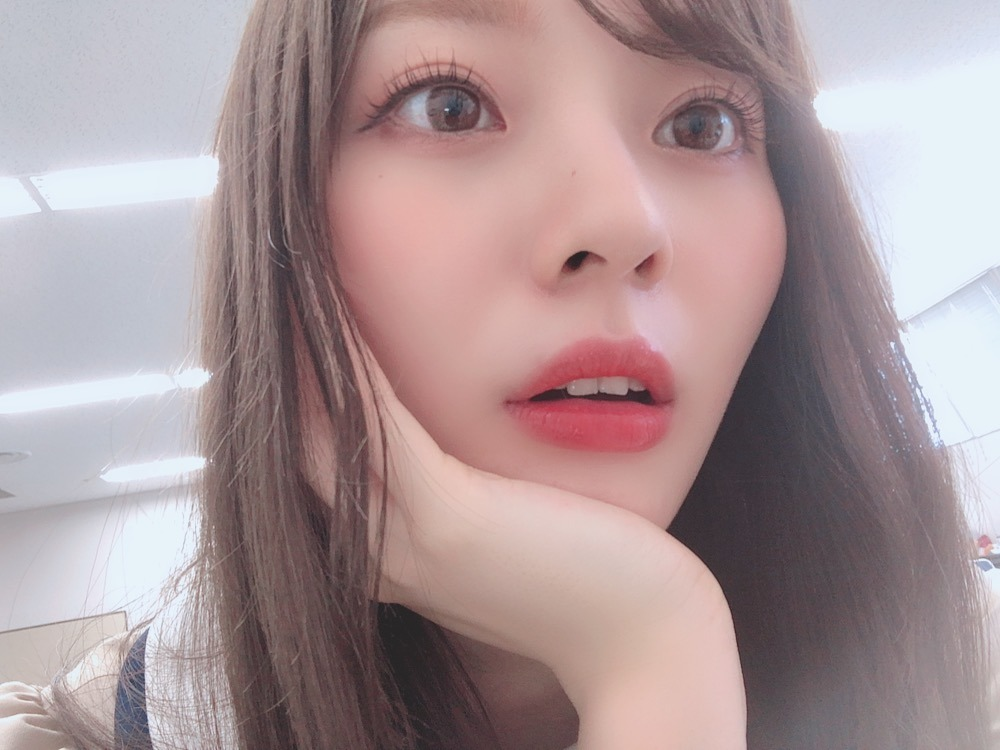
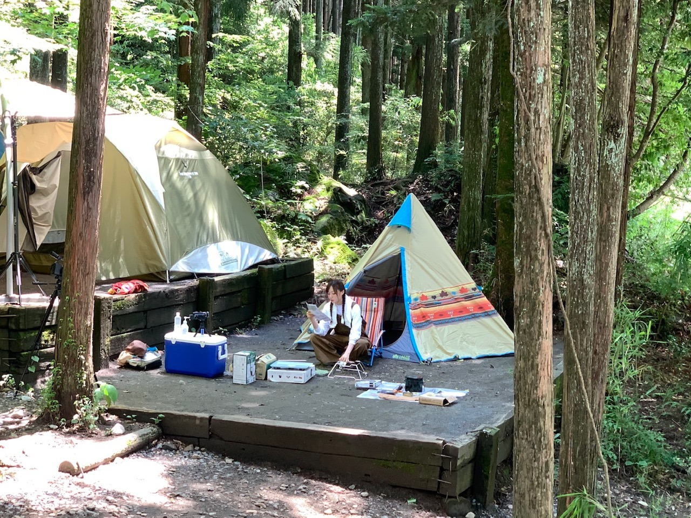
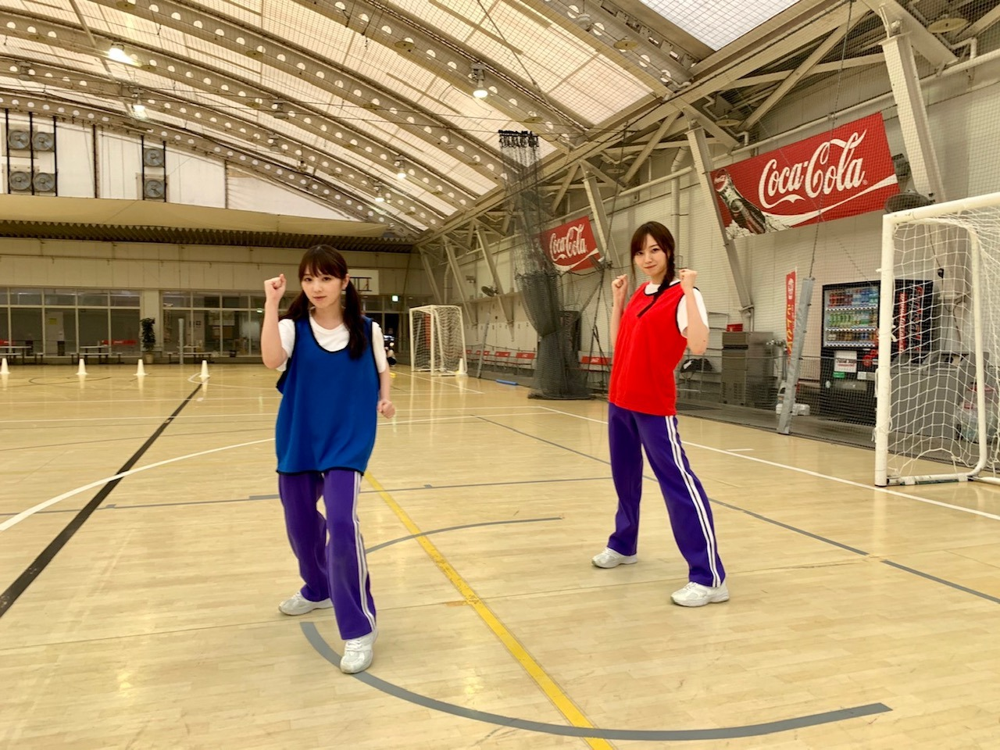
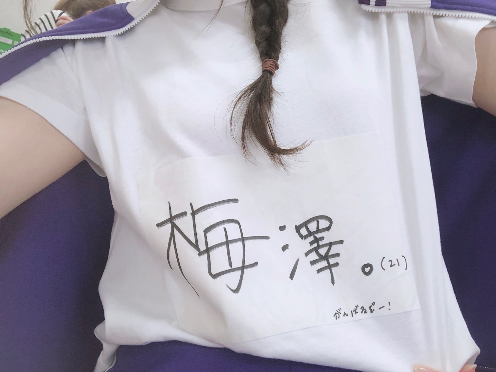
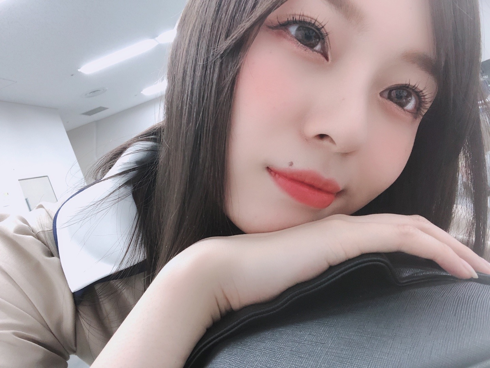

どうやら 言葉じゃ足りなくて 涙に変わったようですねえ

感謝で溢れかえっております！
企画から準備から何から何まで
用意してくださったたくさんのスタッフさん。
消毒したりアクリル板挟んだり
私たちは出てる間マスクが出来ないので
一番動いていて暑い中常にマスク、
フェイスシールドをつけてくださったり
かなりの配慮をしてくださいました。
本当に感謝でいっぱいです。
ありがとうございました！
MCを飛鳥さんと山とやらせて頂きました！
映像研の３人だから、
もうお馴染みの雰囲気のまま
互いのことはなんとなく理解してるから
すごく楽しみながらできました。
真夏さん、たまみ、でん、みりあさんの
電視台にも出さていただいて。
全員の電視台本当に全部全部個性がたっぷり詰まってて最高！
４６時間TVが終わってABEMAさんで見返したりしていました。
人狼も念願だったな〜。
勝ち負けよりも、みんなの表情が面白くて好きでした。（笑）
次、また機会があれば、
先輩方みたく頭脳戦で勝負できるようになりたいです！かっこいい！
電視台ではソロキャンプをしました☀︎
新しい梅澤の姿をお見せするには
これかな、と思い企画してみました。
私はきっと、台本があるより
無い中で動くほうがよりナチュラルなんだと、思います。（笑）
お恥ずかしい話ですが、、
一人だと適当なんです（笑）
雑で、ヘタレで、意外と明るい人のように見えましたね（笑）
ただただ楽しみました。
ぜひ感想聞かせてください( '-' )

一緒に行けたらいいなあ〜☀︎
３期生運動会も！
「運動能力テスト」というより
運動会！だった！楽しかった！
互いに応援しあって
笑っていじってふざけて。

おおおお、、
身長差が、、無いように、、見えるぞ、、
わたしとよだは 何かと隣になることが多くて
リレーも一緒に走った訳ですが
完全にわたし進撃の巨人でしたよね、はは
とにかく与田のショートが可愛すぎてメロメロです。
大切で大切でたまらないみんな。
時間が経つにつれ
気持ちはどんどん大きくなるばかりです！

もうわたしも２１歳。
最近とくに年齢をきちんと意識するようになってきました
いやあ、本当に
わたしは乃木坂を好きになれて
幸せでなりません
加入できて幸せでなりません。
何かを終える度、色んな感想と感情がふつふつと湧き上がってきますが、結果たどり着くのはここ。
やっぱり形は当たり前に色々変わっていきます。
いつどんなときだって、
嫌だとどんなに泣いたって、
時間は止まってなんてくれませんでした
でもね、どんなときも思うのが
あ〜、私の人生は
乃木坂に出会えただけで幸せだ！
これだけで十分幸せじゃんか！って
それくらい
人も時間も思い出も
全部が大切で愛おしすぎて
大好きで、それ故に苦しくなったりもします( '-' )
これ以上大切なものが増えたら
抱えきれなくなって
守りきれなくなっちゃうんじゃないかって
でも両手で収まりきれないほどの
幸せを抱けていることが何よりの幸せですね！
みんなの笑顔が印象的な４６時間。
不安を抱えた時間もあったステイホームの２カ月間が、
この４６時間で吹き飛んだように思えました
やっぱり笑顔が一番！
これからもっと、
活動してきたこれまでの全てを経験を
力に変えてちゃんと実力として蓄えて発揮できるようにならないとです。
大好きなみんながいれば
無敵だと思えます︎︎︎︎︎︎︎︎✌︎
観てくださった皆様、
本当に、ありがとうございました！
これからも 乃木坂46 と一緒に
たくさん笑っていきましょうね

色んな髪型しちゃった〜！
では。
また更新しますね
おやすみなさい
わたし自分の笑った顔 好きじゃないけど
誰かが笑ってくれるなら
そんなの気にせず無邪気に笑っていたいと思いました
ふふ
Original：https://www.nogizaka46.com/s/n46/diary/detail/56850?ima=4938&cd=MEMBER